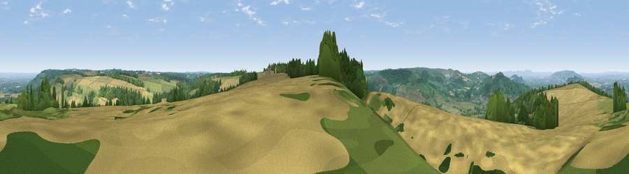

Viewpoint near Sudeley
#6227 in England · top 12% of its area beats it · near SudeleyWhere it is
The exact computed spot (SP 05025 27825). Click the marker for map links.
The view, rendered

A 360° render of this exact spot computed from the terrain model, tree cover and land cover — summer colours, afternoon light, calibrated against photographs of famous viewpoints. Real trees, hedges and buildings will differ in detail.
The panorama
Grey silhouette: terrain skyline in each direction (720 bearings, Earth curvature and refraction included). Dashed green: skyline with trees (+15 m) and buildings (+8 m) as obstacles. Blue strip: how far the ground is visible on each bearing.
Where the view opens
Wedge length = distance to the farthest visible ground on that bearing (vegetation-aware). Rings at 10, 25 and 50 km.
What fills the view
39% cropland · 35% grassland · 25% woodland · 1% built-up
Angular shares of the visible panorama (visual magnitude), not map area. Landscape diversity 0.50 (0–1 Shannon).
Key numbers
More beautiful places nearby
The staircase of upgrades: each row has a higher view potential than everything closer. Driving times are estimates from straight-line distance, calibrated against real road routing — check an actual route before setting out.
| Place | Direction | Drive | Score |
|---|---|---|---|
| Salter's Hill | NNW · 1 km | ~3 min | 72.3 |
| Viewpoint near Langley | WNW · 4 km | ~10 min | 73.7 |
| Viewpoint near Langley | WNW · 5 km | ~11 min | 74.4 |
| Viewpoint near Stanton | NNE · 6 km | ~12 min | 75.8 |
| Cleeve Hill | WSW · 7 km | ~14 min | 79.8 |
| Nottingham Hill | W · 7 km | ~15 min | 80.9 |
| Bredon Hill | NW · 16 km | ~28 min | 83.0 |
| Black Hill | WNW · 31 km | ~48 min | 83.1 |
51.94890, -1.92830 · source: screening · position refined by local search. Computed location — check access rights before visiting.